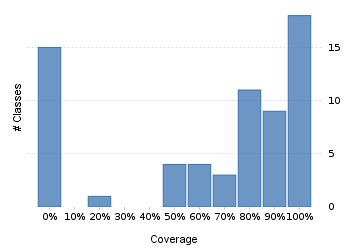

Project overview
Evaluation License
This report was generated with an evaluation server license. Purchase Clover or configure your license.
Code coverage 76 classes, 1.815 / 2.468 elements
0.735413373,5%
Test results 245 / 251 tests 8,07 secs
0.976095697,6%
Code metrics
416
1.645
407
76
69
10
8.189
4.650
723
0,44
4,04
5,36
7,6
1,78
Class Coverage Distribution

Class Complexity

Coverage tree map
Generating Coverage Tree Map. Please wait...

Top 20 project risks
BatchStepExecutionsController
TableUtils
BatchJobInstancesController
LocalFileService
JdbcSearchableStepExecutionDao
JobController
SimpleJobService
BatchJobExecutionsController
JobLocatorStepLocator
JobNameToJobRestartRequestAdapter
SimpleJobExecutionMetrics
BatchJobsController
ThrottledTaskExecutor
FileController
JobExecutionController
JdbcSearchableJobExecutionDao
FileServiceResourceConverter
FileToJobLaunchRequestAdapter
JobConfigurationRequestToResourceAdapter
StepExecutionController
Most complex packages
| 1. | 0.8497237685% |
org.springframework.batch.admin.service 242 |
| 2. | 0.6358543663,6% |
org.springframework.batch.admin.web 213 |
| 3. | 0.6933638569,3% |
org.springframework.batch.admin.jmx 135 |
| 4. | 0.6387096663,9% |
org.springframework.batch.admin.integration 46 |
| 5. | 0.5274725652,7% |
org.springframework.batch.poller.scheduling 30 |
Most complex classes
| 1. | 0.880% |
SimpleJobService 87 |
| 2. | 0.7709923477,1% |
SimpleJobExecutionMetrics 43 |
| 3. | 0.8053691480,5% |
BatchMBeanExporter 41 |
| 4. | 0.5901639559% |
JobExecutionController 36 |
| 5. | 0.702702770,3% |
SimpleStepExecutionMetrics 35 |